Автопрогон стенда: Scheduler · Multilevel Grouping
Playwright + Chrome, окно 1680×1200, сборка ветки фичи 26.2.0 @ c753b73d70. Проверялись: структура панели групп, попадание встреч в свои группы по геометрии, интерактив, axe и обрезка подписей. Скриншоты сняты автоматически, по одному на сценарий.
Что нашлось
- Дубли id в источнике ресурса → две одинаковые группы и удвоенные встречи (сценарий).
- Agenda + иерархия → панель групп не отрисована вообще: встречи идут списком без единой подписи группы (сценарий).
- Форма отдаёт родительские узлы → выбор «Building A» и Save убирают встречу из сетки навсегда; в данных она остаётся (сценарий).
- Встреча с id родителя молча не рисуется — ни предупреждения, ни ремарки в документации (сценарий).
- Фильтрация ветки оставляет опустевшего родителя отдельной листовой группой (сценарий) — нужно решение команды.
- Плоская вертикальная группировка (без иерархии) не даёт подписям ни
title, ниaria-label, в иерархической они есть (сценарий).
Интерактив
| Проверка | Итог | Что произошло | Скриншот |
|---|---|---|---|
| Создание встречи двойным кликом под Room 201 | ок | Форма открылась, ресурс предзаполнен «Room 201». | 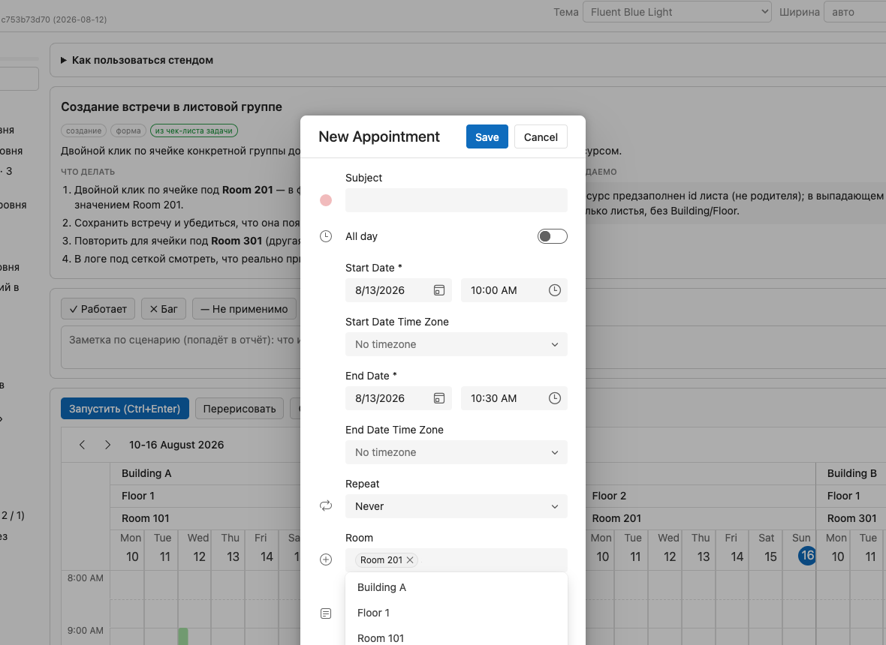 |
| Список ресурса в форме | дефект | Отдаёт все 9 узлов дерева, включая Building A, Floor 1, Floor 2, Building B — не только листья. | 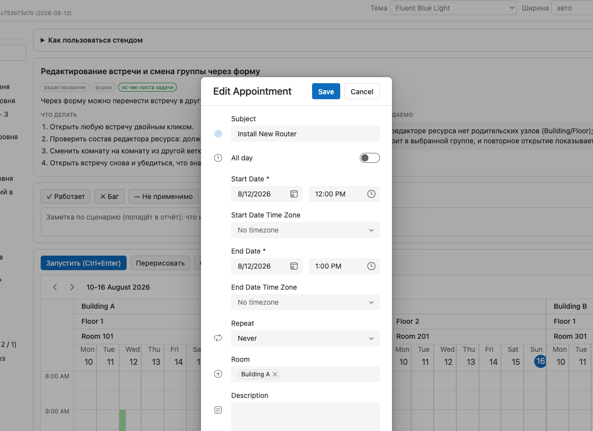 |
| Выбор родителя в форме + Save | дефект | Встреча исчезает из сетки (8→7), в данных остаётся roomId ["b1"]. Вернуть её через интерфейс нельзя. | 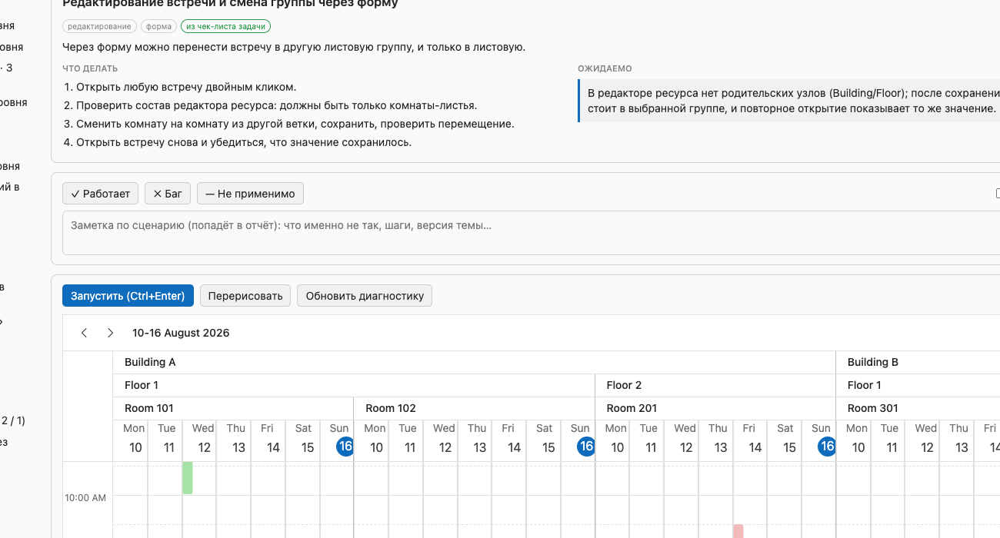 |
| Редактирование встречи | ок | Открытие встречи Room 102 показывает верный ресурс и тему («Install New Router»). | — |
| Drag & drop из Room 101 в Room 301 (другая ветка) | ок | onAppointmentUpdating: [101] → [301]; после переноса все встречи стоят в своих группах (промахов 0). | 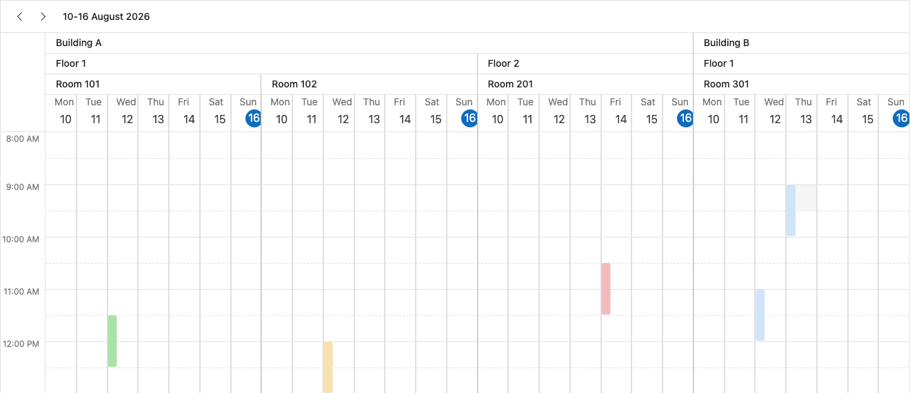 |
| scrollTo к группе и времени | ок | scrollTo Room 313 → вертикальная прокрутка 576px, scrollTo Room 111 → 0px, время 15:00 удерживается (scrollLeft 11191). | 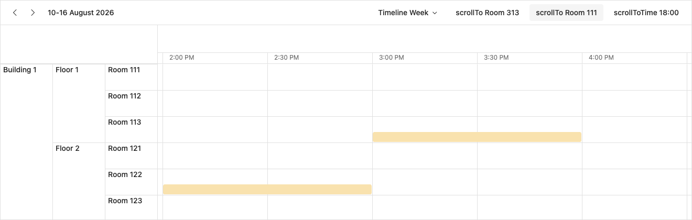 |
| Клики и двойные клики по заголовкам родителей | ок | Структура шапки не изменилась, попапов не открылось, ошибок нет — свёртывания нет, как и заявлено. | — |
| Перетаскивание заголовка группы | ок | Игнорируется полностью: порядок групп не изменился, исключений нет. | — |
| Клавиатура: стрелки по ячейкам | ок | Фокус переходит между группами, на границе не застревает. Enter попап не открывает — но так же и в плоской группировке, к иерархии не относится. | — |
| Смена ориентации кнопкой ×4 | ок | Чередуется vertical (4 листа) / horizontal (3 уровня), без исключений и остатков прошлой раскладки. | — |
| Рантайм: убрать parentIdExpr / вернуть / groups=[] / другое дерево | ок | Все пять переключений дают консистентную картинку. После «убрать parentIdExpr» 9 плоских групп и 0 встреч — это ловушка узких ячеек, не дефект. | 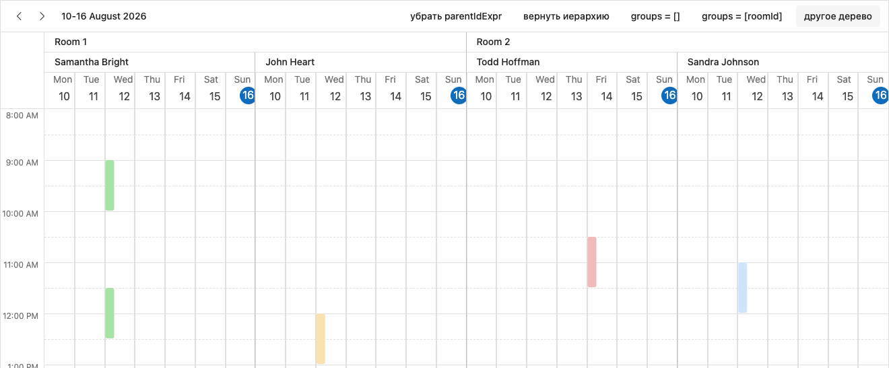 |
| Асинхронный источник ресурсов + перезагрузка | ок | После загрузки 9 заголовков; повторная установка resources перестраивает дерево без ошибок. | — |
axe-core
Нарушений не найдено ни в одной из конфигураций: a11y-smoke (обе ориентации), orient-vertical, headers-crop-vertical, regress-flat-vertical, opt-two-hierarchies, opt-agenda, opt-rtl.
Все сценарии
| Сценарий | Итог | Факты и комментарий | Скриншот |
|---|---|---|---|
| view-timelineDay | ок | уровней 3, листовых групп 4, встреч в DOM 5, ширина ячейки 200 px Встреч 5, а не 4: у Room 101 на опорную дату попадают обе встречи. Ожидание в скрипте было неточным. | 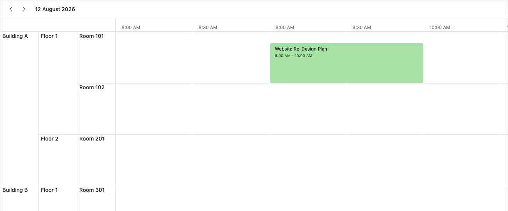 |
| view-timelineWeek | ок | уровней 3, листовых групп 4, встреч в DOM 8, ширина ячейки 200 px | 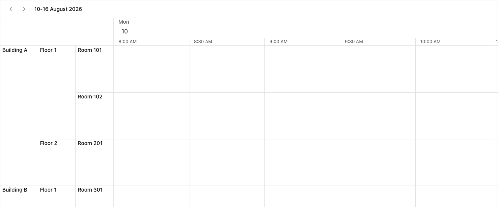 |
| view-timelineWorkWeek | ок | уровней 3, листовых групп 4, встреч в DOM 8, ширина ячейки 200 px | |
| view-timelineMonth | ок | уровней 3, листовых групп 4, встреч в DOM 7, ширина ячейки 200 px Встреч 7 + коллектор «1 more» = все 8: две встречи Room 101 в одной ячейке дня. | 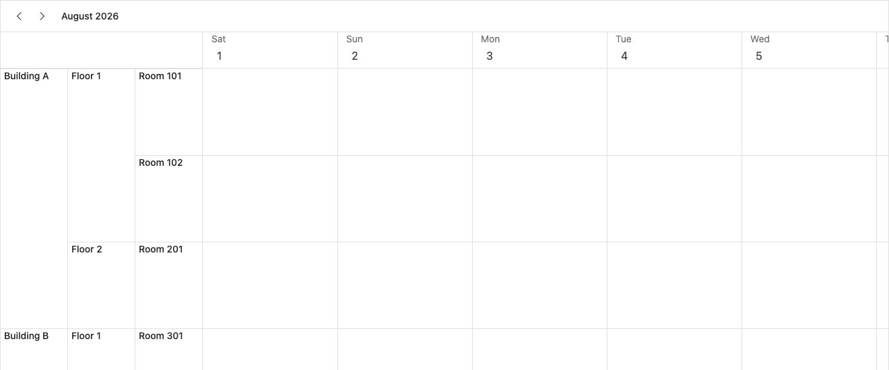 |
| view-day | ок | уровней 3, листовых групп 4, встреч в DOM 5, ширина ячейки 313.3 px То же: 5 встреч на опорную дату. | 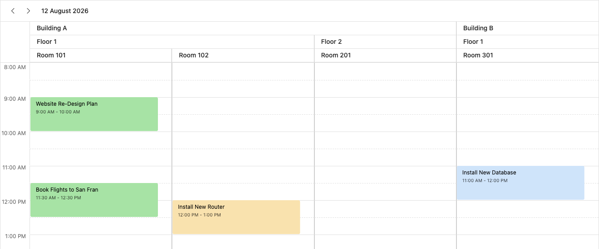 |
| view-week | ок | уровней 3, листовых групп 4, встреч в DOM 8, ширина ячейки 44.8 px |  |
| view-workWeek | ок | уровней 3, листовых групп 4, встреч в DOM 8, ширина ячейки 62.6 px | 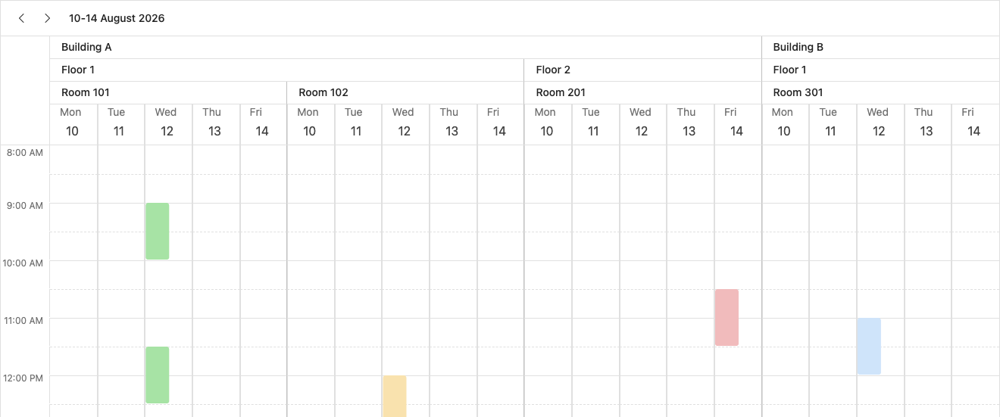 |
| view-switch | ок | уровней 3, листовых групп 4, встреч в DOM 5, ширина ячейки 313.3 px То же: 5 встреч на опорную дату. | |
| orient-horizontal | ок | уровней 3, листовых групп 4, встреч в DOM 8, ширина ячейки 44.8 px | 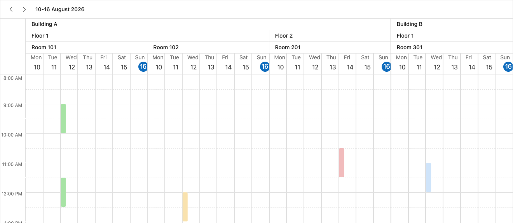 |
| orient-vertical | ок | уровней 3, листовых групп 4, встреч в DOM 8, ширина ячейки 151.1 px | 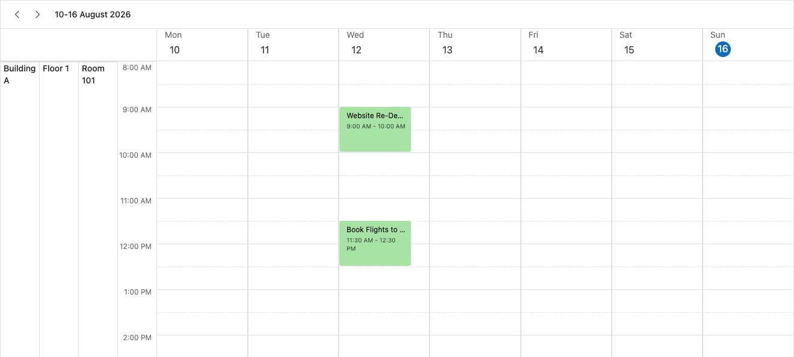 |
| orient-runtime | ок | уровней 3, листовых групп 4, встреч в DOM 8, ширина ячейки 44.8 px | 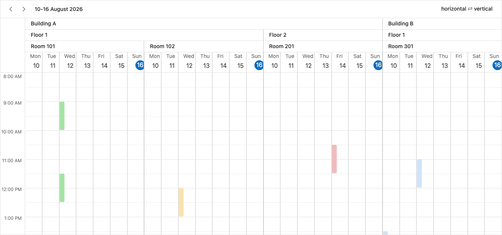 |
| orient-vertical-allday | ок | уровней 3, листовых групп 4, встреч в DOM 12, ширина ячейки 151 px | 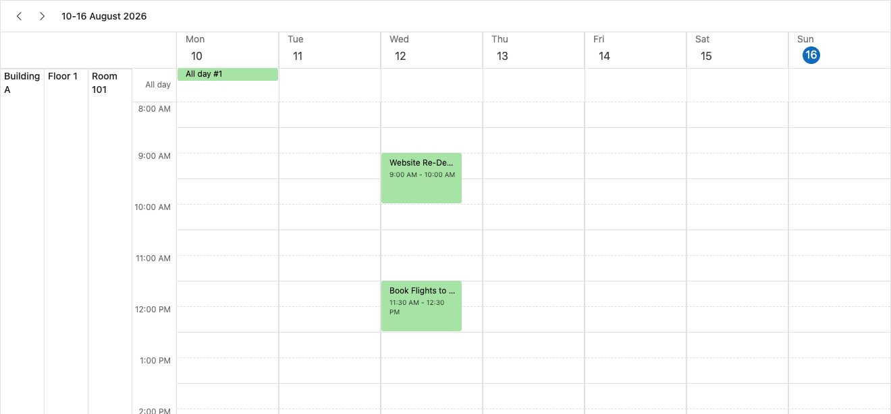 |
| shape-2-levels | ок | уровней 2, листовых групп 4, встреч в DOM 8, ширина ячейки 44.8 px | 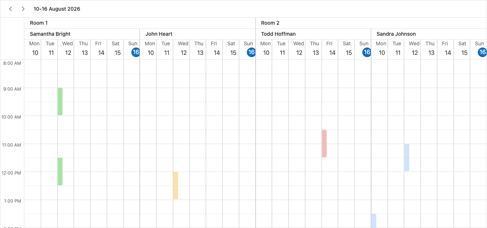 |
| shape-3-levels | ок | уровней 3, листовых групп 4, встреч в DOM 8, ширина ячейки 44.8 px | 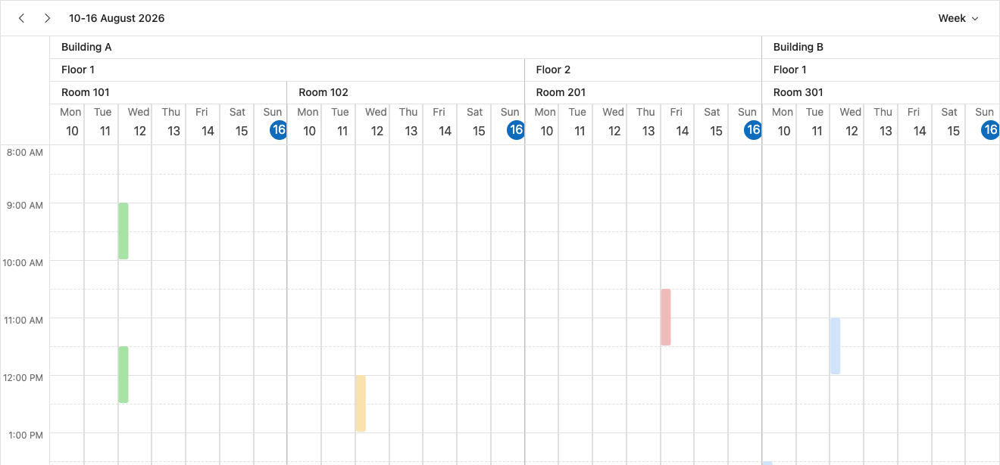 |
| shape-mixed-depth | ок | уровней 3, листовых групп 4, встреч в DOM 8, ширина ячейки 44.8 px | 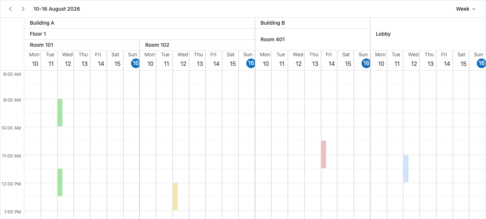 |
| shape-subset | ок | уровней 2, листовых групп 2, встреч в DOM 4, ширина ячейки 89.5 px | 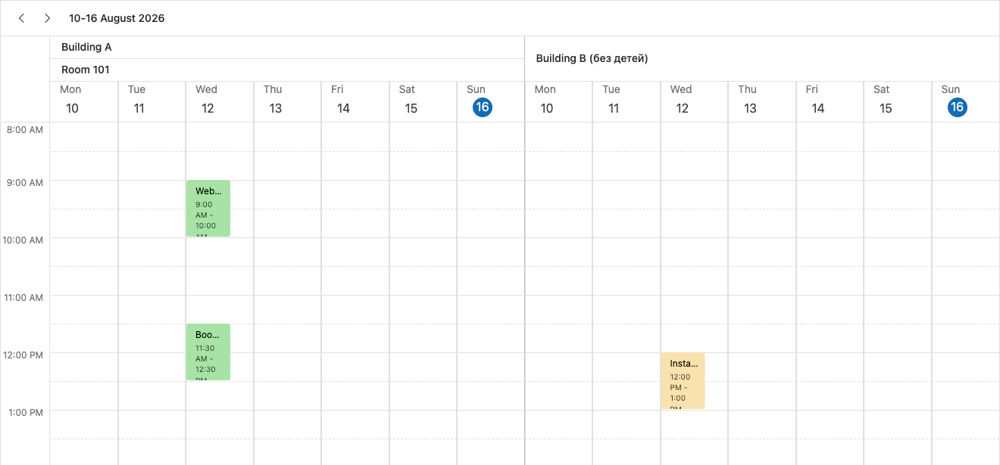 |
| headers-crop-horizontal | ок | уровней 3, листовых групп 3, встреч в DOM 6, ширина ячейки 33 px Уровней 3, а не 2: в дереве длинных имён есть ветка Building → Floor → Room. Обрезано 4 заголовка, у всех есть title. | 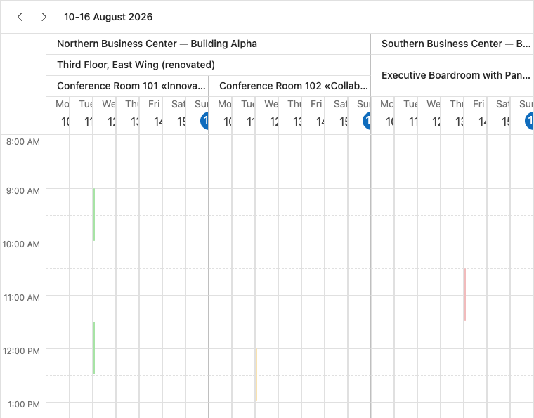 |
| headers-crop-vertical | ок | уровней 3, листовых групп 3, встреч в DOM 6, ширина ячейки 64.9 px Обрезано 3 заголовка, у всех есть title и aria-label. | 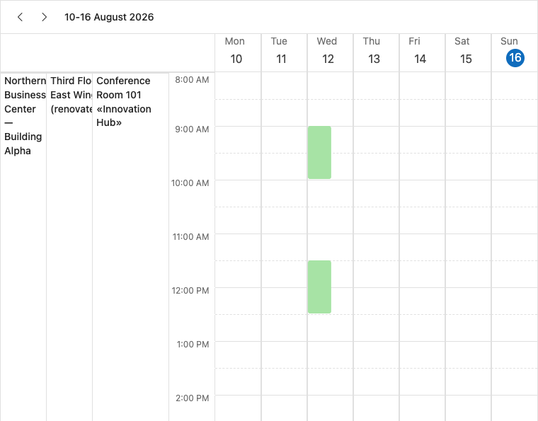 |
| a11y-smoke | ок | уровней 3, листовых групп 4, встреч в DOM 8, ширина ячейки 44.8 px | 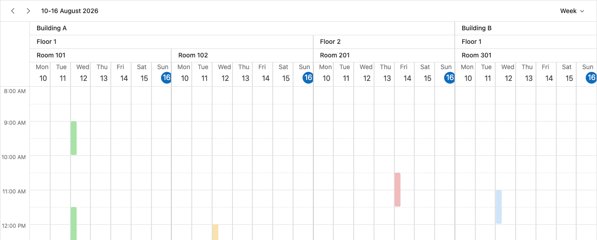 |
| interact-create | ок | уровней 3, листовых групп 4, встреч в DOM 8, ширина ячейки 44.8 px | 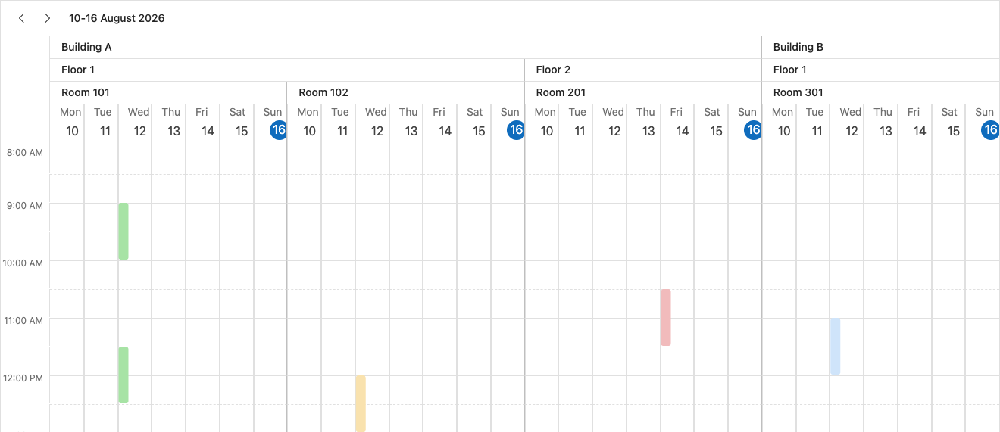 |
| interact-edit | ок | уровней 3, листовых групп 4, встреч в DOM 8, ширина ячейки 44.8 px | 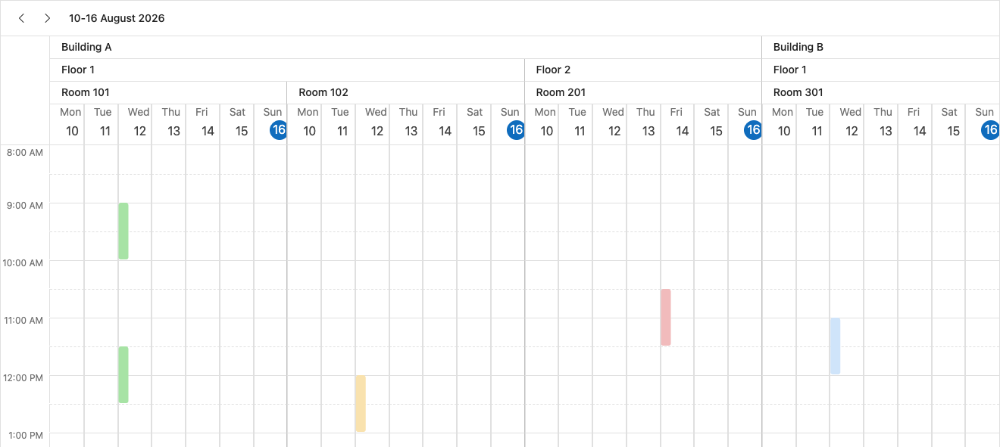 |
| interact-dnd | ок | уровней 3, листовых групп 4, встреч в DOM 8, ширина ячейки 44.8 px |  |
| interact-scrollto | ок | уровней 3, листовых групп 18, встреч в DOM 36, ширина ячейки 200 px | 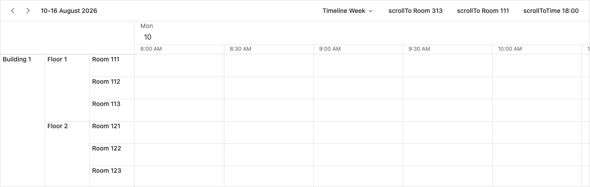 |
| regress-flat-horizontal | ок | уровней 1, листовых групп 3, встреч в DOM 6, ширина ячейки 59.7 px | 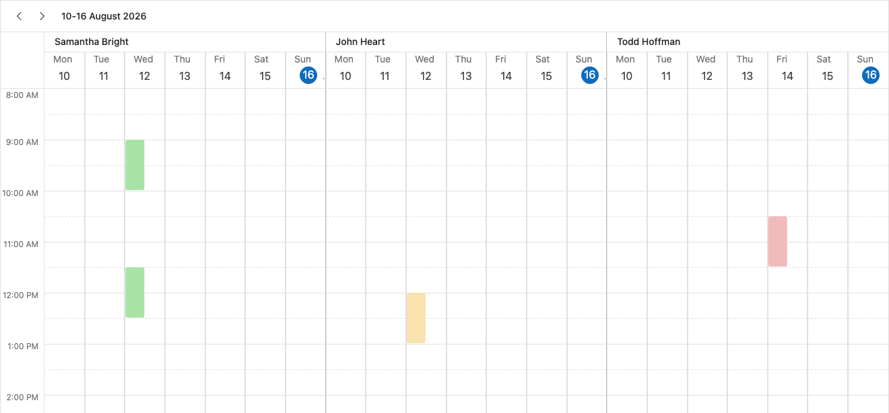 |
| regress-flat-vertical | вопрос | уровней 1, листовых групп 3, встреч в DOM 6, ширина ячейки 169.7 px Регрессия доступности вне фичи: в ПЛОСКОЙ вертикальной группировке у заголовков нет ни title, ни aria-label (в иерархической есть и то, и другое). | 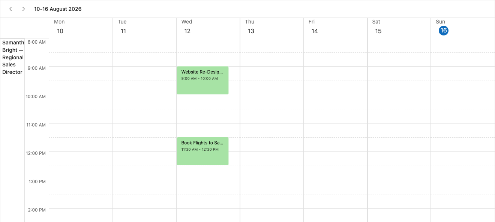 |
| regress-flat-plus-hierarchy | ок | уровней 4, листовых групп 8, встреч в DOM 8, ширина ячейки 75 px | 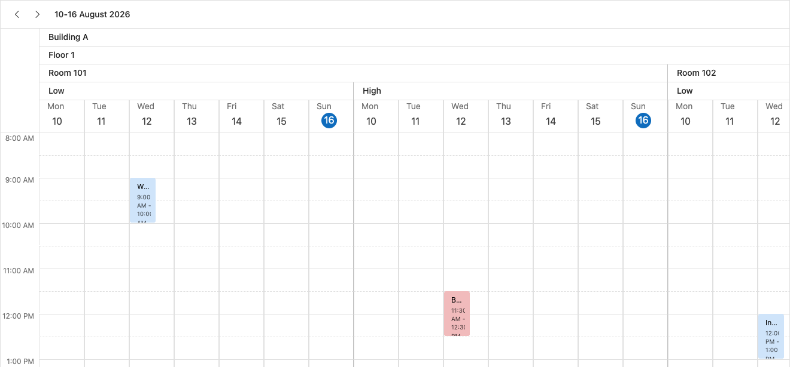 |
| outscope-collapse | ок | уровней 3, листовых групп 4, встреч в DOM 8, ширина ячейки 44.8 px |  |
| outscope-drag-tree | ок | уровней 3, листовых групп 4, встреч в DOM 8, ширина ячейки 44.8 px | 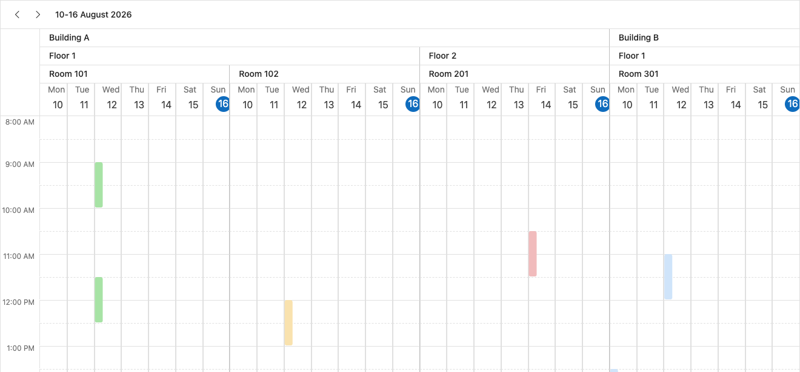 |
| outscope-depth-4 | ок | уровней 4, листовых групп 4, встреч в DOM 8, ширина ячейки 44.8 px 4 уровня рисуются корректно, ограничения по глубине в коде нет. | 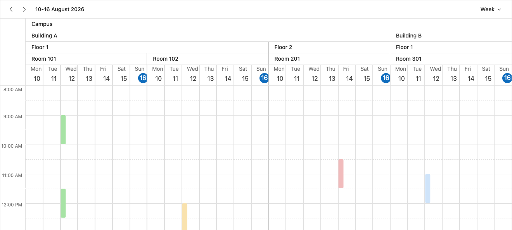 |
| outscope-kbn | ок | уровней 3, листовых групп 4, встреч в DOM 8, ширина ячейки 44.8 px |  |
| data-orphan | ок | уровней 2, листовых групп 2, встреч в DOM 4, ширина ячейки 89.5 px | 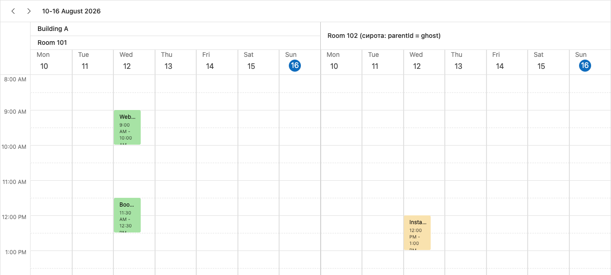 |
| data-cycle | ок | уровней 1, листовых групп 3, встреч в DOM 6, ширина ячейки 59.7 px | 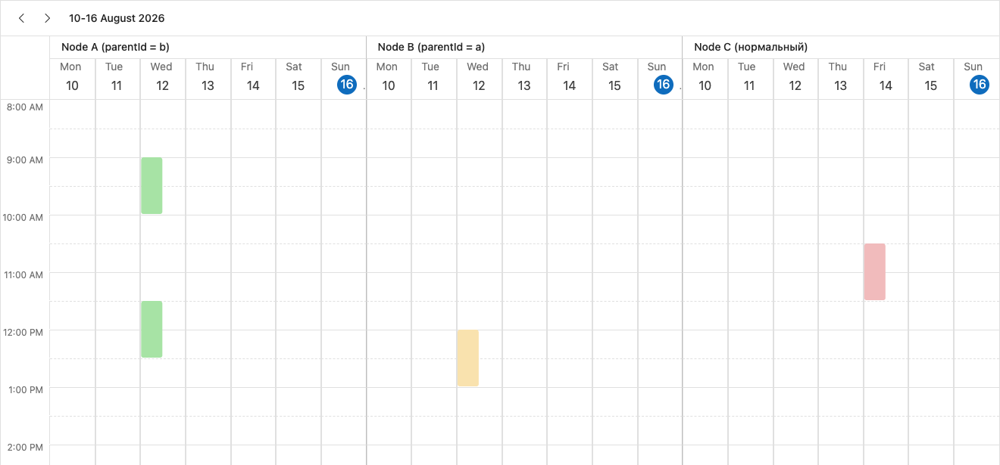 |
| data-self-parent | ок | уровней 2, листовых групп 1, встреч в DOM 2, ширина ячейки 179 px | 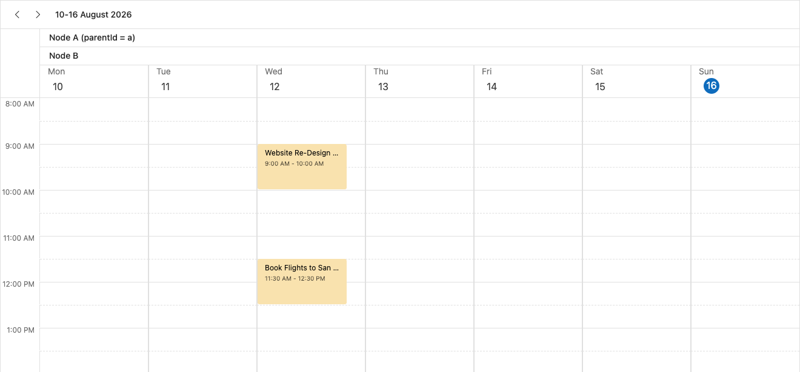 |
| data-duplicate-ids | дефект | уровней 2, листовых групп 3, встреч в DOM 6, ширина ячейки 59.7 px ДЕФЕКТ: узел с дублирующимся id даёт ДВЕ группы («Room 101 (дубль id)» дважды) и удваивает встречи (6 вместо 4). | 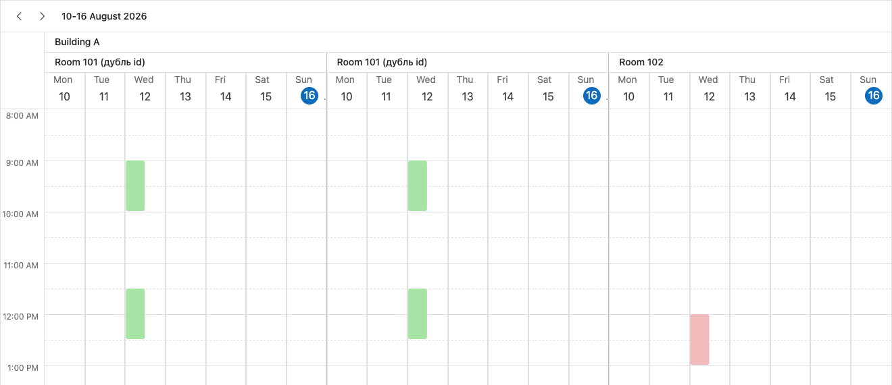 |
| data-empty-parent | ок | уровней 2, листовых групп 3, встреч в DOM 6, ширина ячейки 59.7 px | 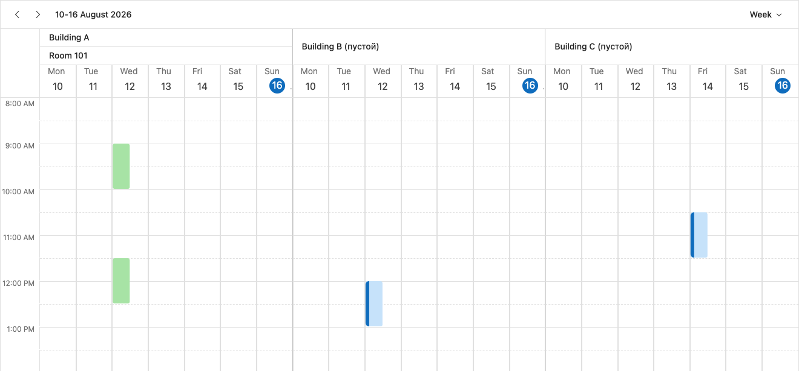 |
| data-object-ids | ок | уровней 2, листовых групп 2, встреч в DOM 2, ширина ячейки 89.5 px | 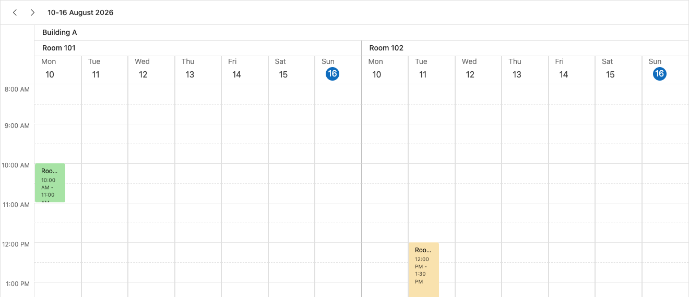 |
| data-appointment-on-parent | вопрос | уровней 3, листовых групп 4, встреч в DOM 3, ширина ячейки 44.8 px Подтверждено: встречи с id родителя молча отбрасываются (в сетке 3 из 5 записей), без предупреждения в консоли. | 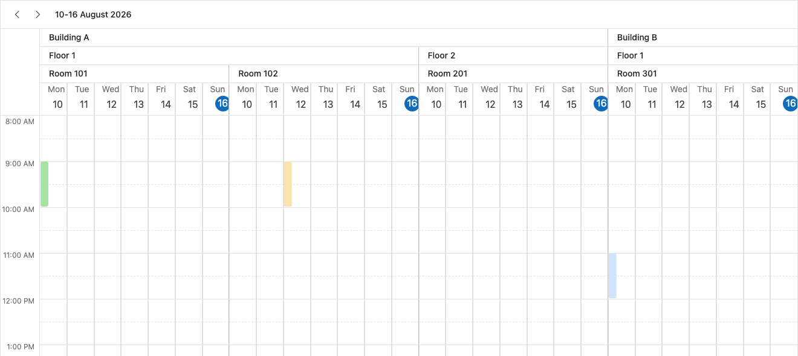 |
| data-form-parent-loss | дефект | уровней 3, листовых групп 4, встреч в DOM 8, ширина ячейки 44.8 px ДЕФЕКТ (сквозной сценарий): список ресурса в дефолтной форме отдаёт Building/Floor; выбор «Building A» + Save → встреча исчезает из сетки (8→7), запись остаётся в данных с roomId ["b1"] и недоступна из интерфейса. | 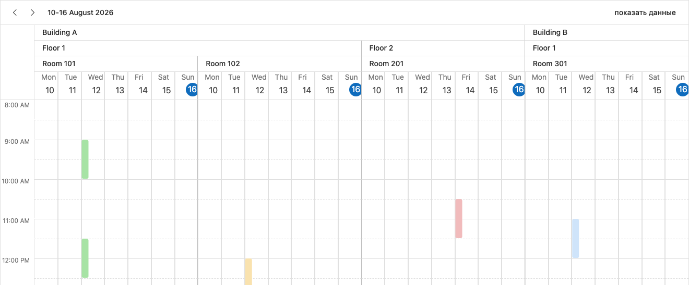 |
| data-multiple-branches | ок | уровней 3, листовых групп 4, встреч в DOM 3, ширина ячейки 44.8 px | 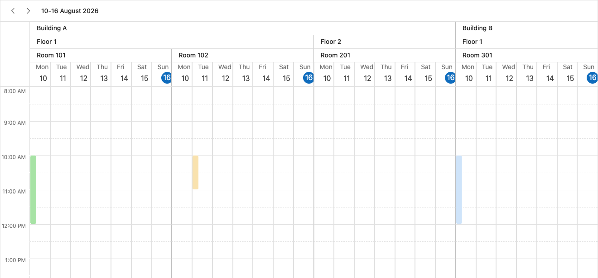 |
| opt-agenda | дефект | уровней 0, листовых групп 0, встреч в DOM 7, ширина ячейки 1248 px ДЕФЕКТ: в Agenda панель групп не отрисована вообще (таблица групп пустая) — ни Building, ни Floor, ни Room. Встреч 7 из 8, потому что восьмая (10 августа) вне диапазона Agenda, начинающегося с опорной даты. | 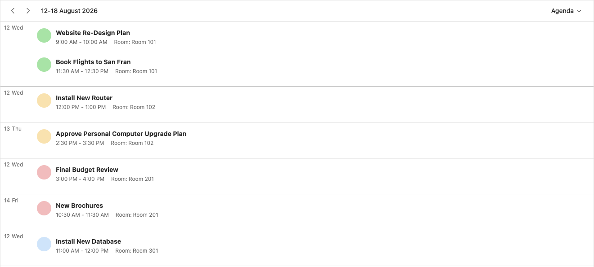 |
| opt-month | ок | уровней 3, листовых групп 4, встреч в DOM 16, ширина ячейки 75 px | 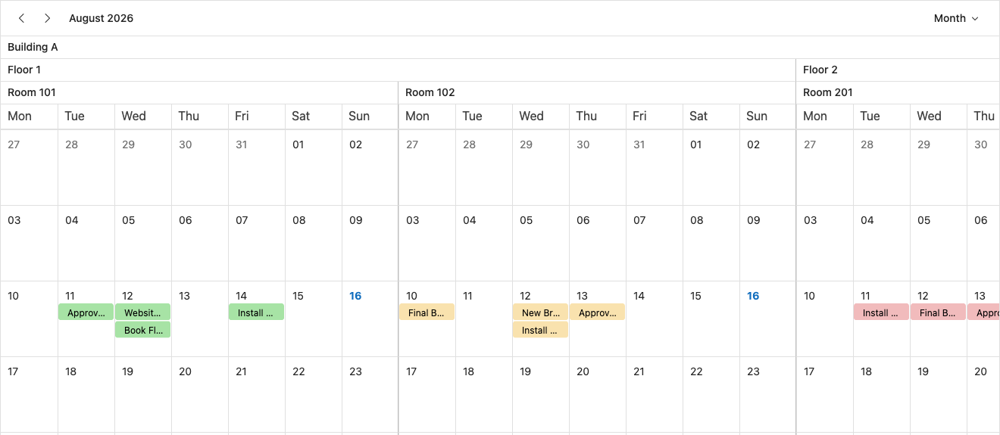 |
| opt-group-by-date | ок | уровней 3, листовых групп 28, встреч в DOM 8, ширина ячейки 75 px | 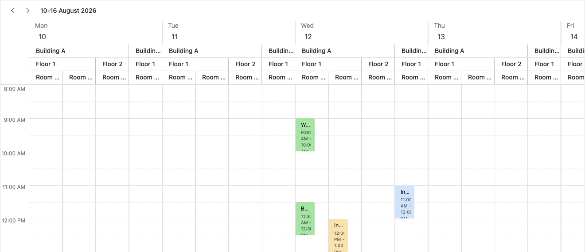 |
| opt-virtual-scrolling | ок | уровней 3, листовых групп 18, встреч в DOM 10, ширина ячейки 75 px | 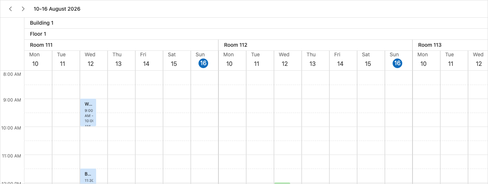 |
| opt-cross-scrolling | ок | уровней 3, листовых групп 18, встреч в DOM 36, ширина ячейки 200 px | 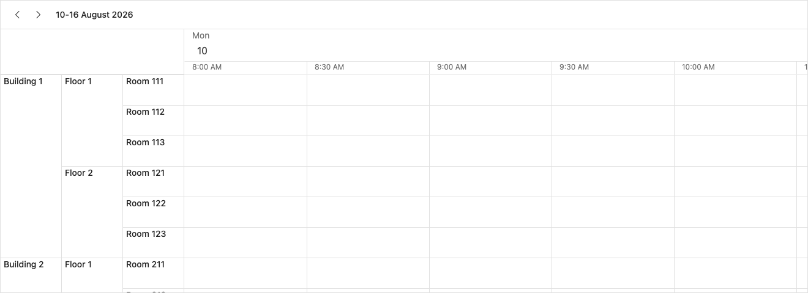 |
| opt-narrow | ок | уровней 3, листовых групп 4, встреч в DOM 5, ширина ячейки 313.3 px То же: 5 встреч на опорную дату. | 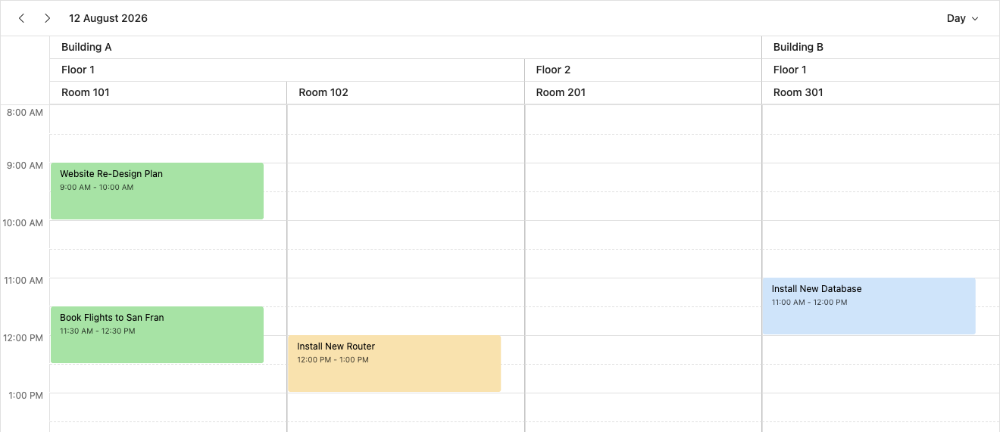 |
| opt-rtl | ок | уровней 3, листовых групп 4, встреч в DOM 8, ширина ячейки 44.8 px | 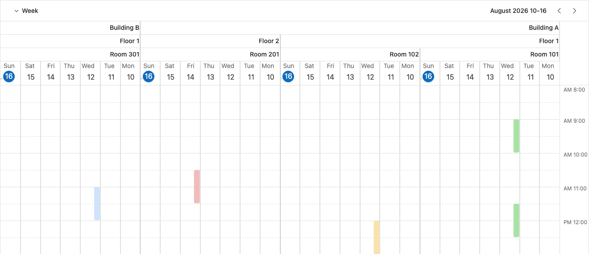 |
| opt-recurrence | ок | уровней 3, листовых групп 4, встреч в DOM 6, ширина ячейки 44.8 px | 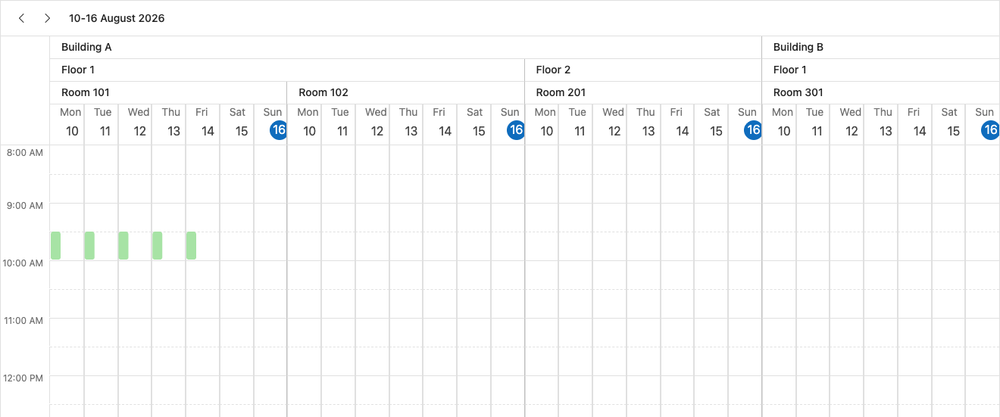 |
| opt-current-time | ок | уровней 3, листовых групп 4, встреч в DOM 0, ширина ячейки 44.8 px | 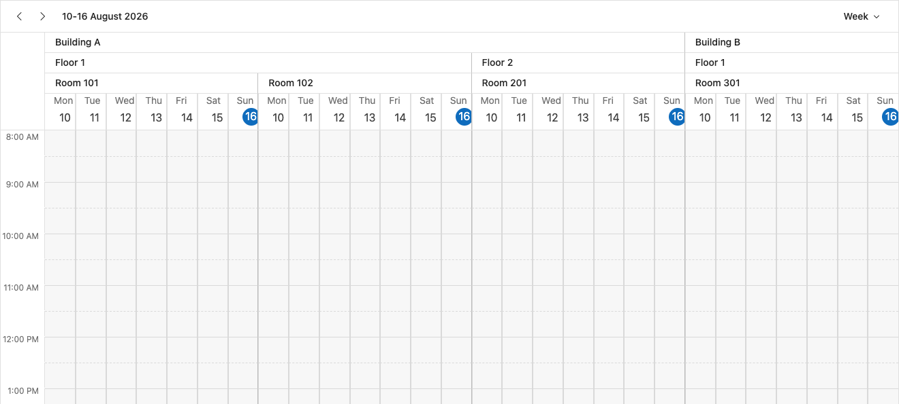 |
| opt-async-store | ок | уровней 3, листовых групп 4, встреч в DOM 8, ширина ячейки 44.8 px | 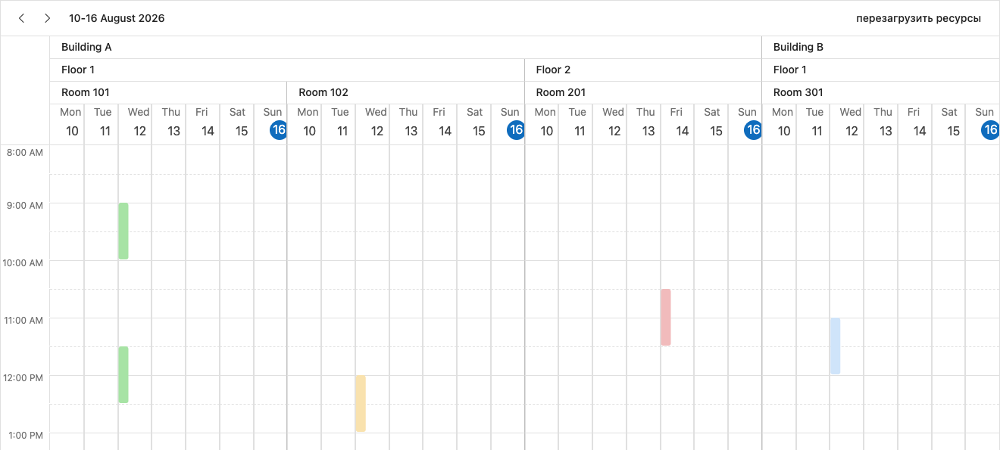 |
| opt-datasource-filter | вопрос | уровней 3, листовых групп 4, встреч в DOM 6, ширина ячейки 44.8 px filter/sort/map применяются. Но отфильтрованная Room 201 оставила родителя «Floor 2» — он стал листовой группой без комнат. Решение по этому поведению за командой. | 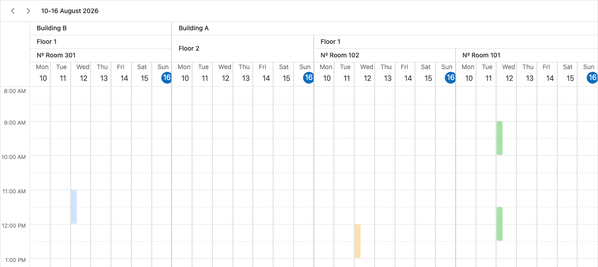 |
| opt-runtime-groups | ок | уровней 3, листовых групп 4, встреч в DOM 8, ширина ячейки 44.8 px | |
| opt-template | ок | уровней 3, листовых групп 4, встреч в DOM 8, ширина ячейки 44.8 px | |
| opt-group-texts | ок | уровней 3, листовых групп 4, встреч в DOM 2, ширина ячейки 44.8 px | |
| opt-resize-select | ок | уровней 3, листовых групп 4, встреч в DOM 8, ширина ячейки 44.8 px | |
| opt-interval-count | ок | уровней 3, листовых групп 4, встреч в DOM 8, ширина ячейки 75 px | |
| opt-two-hierarchies | ок | уровней 5, листовых групп 16, встреч в DOM 4, ширина ячейки 78.3 px Две иерархии сразу: 16 листовых полос, все 4 встречи в своих парах групп, исключений нет. | |
| opt-themes | ок | уровней 3, листовых групп 4, встреч в DOM 8, ширина ячейки 44.8 px | |
| opt-perf | ок | уровней 3, листовых групп 18, встреч в DOM 306, ширина ячейки 75 px | |
| opt-narrow-cells | ок | уровней 2, листовых групп 6, встреч в DOM 0, ширина ячейки 29.8 px Ловушка воспроизведена: 0 встреч при узких ячейках, 12 после включения crossScrolling. Для плоской группировки поведение идентично. |